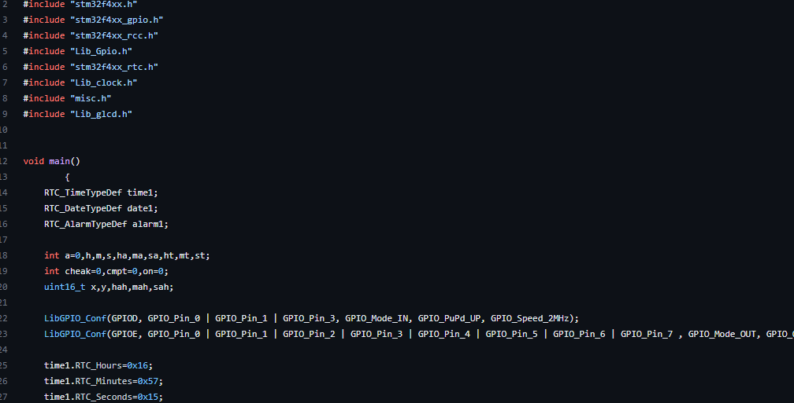

This webpage showcases a collection of projects I have developed in the field of embedded system programming using STM32 microcontrollers.
The projects presented on this webpage were developed using the STM32 microcontroller and a variety of sensors and peripherals. The projects demonstrate a range of functionalities, such as data acquisition, signal processing, control algorithms, and wireless communication. The projects were developed using a variety of programming languages and environments, including C, C++, and various software tools.